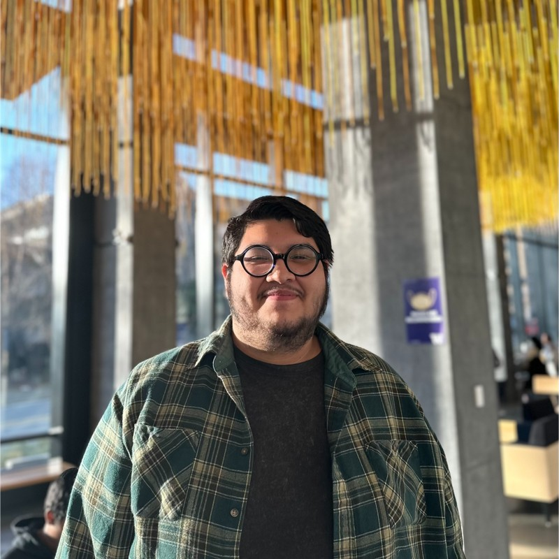

+_PERSONNEL_FILE_+
JAIME
JAIME
SERRANO
Researcher, designer, and developer pursuing a Master of Science in Information Management at the University of Washington. Work spans UX research, prototyping, geospatial data visualization, and AR design — combining quantitative analysis with qualitative insight to build purposeful, user-centered solutions.
↓ Download Resume
// SECTION_01 //
Skills & Expertise
Programming
- HTML
- CSS
- JavaScript
- Python (pandas)
- R (tidyverse, dplyr, ggplot2, shinyapp)
Data & Analysis
- Tableau
- ArcGIS
- Dedoose
Design & Prototyping
- Figma
- Adobe Illustrator
- Rhino
- Cursor
Methodologies
- Thematic Analysis
- Systems Thinking
- Design Thinking
// SECTION_02 //
Education
Jun 2027 — Expected
Master of Science, Information Management
University of Washington, The Information School
Jun 2024
B.A., Science, Technology, & Society
University of Washington, School of Interdisciplinary Arts & Sciences
// SECTION_03 //
Experience
Jan 2024 – Mar 2025
Research Analyst — Casey Lab
University of Washington, Dept. of Environmental & Occupational Health Sciences. Utilized R (tidyverse) for evaluative data analysis on large environmental datasets. Created 100+ ArcGIS map files from R-filtered data, delivering geospatial insights that informed research direction. Constructed multiple line grids within ArcGIS for Seattle and Chicago. Co-authored research paper with cross-functional teams.
Jul 2023 – Sep 2023
Research Assistant — THINK Lab
University of Washington, Dept. of Civil & Environmental Engineering. Reviewed 10+ quantitative methodologies. Fabricated 20+ ArcGIS ellipses using confidence intervals and Python (pandas)-filtered datasets to reveal behavioral patterns. Developed Python scripts that automated ellipse creation across multiple files.
// SECTION_04 //
University Projects
Sep 2025 – Dec 2025
RunAR
Conducted user interviews for a hands-free AR running solution, identifying key user wants and needs. Created 2 low-fi UI prototypes for AR running glasses. Recorded Wizard of Oz user testing sessions documenting prototype strengths and weaknesses.
Jan 2024 – Jun 2024
User Study Research
Coded 20+ excerpts using Dedoose for qualitative research accuracy. Applied Likert-Scale for quantitative preference data. Conducted thematic analysis resulting in 4 emergent research themes.